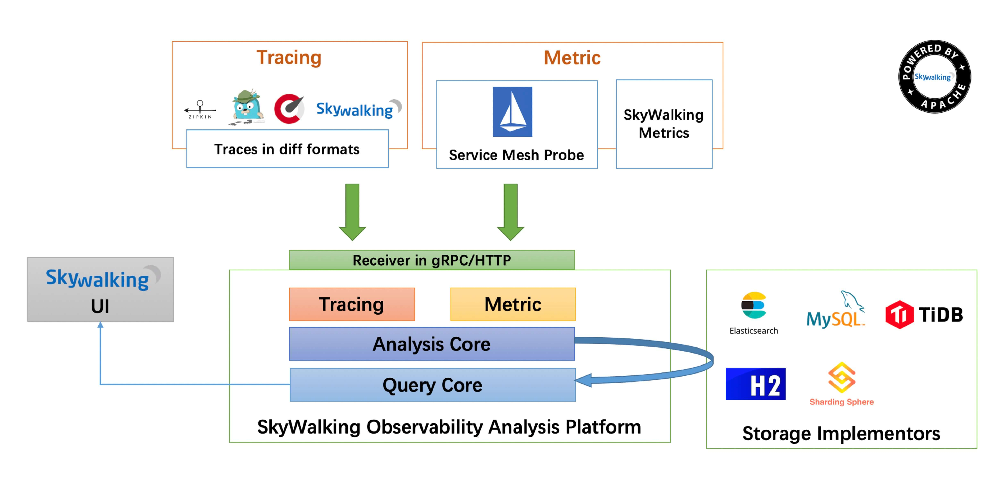

链路追踪
什么是链路追踪
微服务架构是通过业务来划分服务的，使用 REST 调用。对外暴露的一个接口，可能需要很多个服务协同才能完成这个接口功能，如果链路上任何一个服务出现问题或者网络超时，都会形成导致接口调用失败。随着业务的不断扩张，服务之间互相调用会越来越复杂。

随着服务的越来越多，对调用链的分析会越来越复杂。它们之间的调用关系也许如下：

面对以上情况，我们就需要一些可以帮助理解系统行为、用于分析性能问题的工具，以便发生故障的时候，能够快速定位和解决问题，这就是所谓的 APM（应用性能管理）。
什么是 SkyWalking
目前主要的一些 APM 工具有: Cat、Zipkin、Pinpoint、SkyWalking；Apache SkyWalking 是观察性分析平台和应用性能管理系统。提供分布式追踪、服务网格遥测分析、度量聚合和可视化一体化解决方案。

-
Skywalking Agent： 使用 JavaAgent 做字节码植入，无侵入式的收集，并通过 HTTP 或者 gRPC 方式发送数据到 SkyWalking Collector。
-
SkyWalking Collector： 链路数据收集器，对 agent 传过来的数据进行整合分析处理并落入相关的数据存储中。
-
Storage： SkyWalking 的存储，时间更迭，SW 已经开发迭代到了 6.x 版本，在 6.x 版本中支持以 ElasticSearch(支持 6.x)、Mysql、TiDB、H2、作为存储介质进行数据存储。
-
UI： Web 可视化平台，用来展示落地的数据。
SkyWalking 功能特性
-
多种监控手段，语言探针和服务网格(Service Mesh)
-
多语言自动探针，Java，.NET Core 和 Node.JS
-
轻量高效，不需要大数据
-
模块化，UI、存储、集群管理多种机制可选
-
支持告警
-
优秀的可视化方案
SkyWalking 服务端配置
基于 Docker 安装 ElasticSearch
上面介绍过 SkyWalking 存储方案有多种，官方推荐的方案是 ElasticSearch ，所以我们需要先安装 ElasticSearch。 在虚拟机centOS上进行安装。
这里使用拉取镜像并创建容器的方式进行安装：
拉取es镜像，默认拉取最新版：
1 | docker pull elasticsearch:7.6.1 |
创建并运行容器：
1 | docker run -di --name=es7 -p 9200:9200 -p 9300:9300 -e "discovery.type=single-node" elasticsearch:7.6.1 |
进入容器：
1 | docker exec -it es7 /bin/bash |
修改配置：
1 | cd config |
添加修改内容如下：
1 | network.host: 127.0.0.1 #推荐本机IP |
打开浏览器访问：
1 | 虚拟机ip:9200 |
下载并启动 SkyWalking
官方已经为我们准备好了编译过的服务端版本，下载地址为 http://skywalking.apache.org/downloads/，这里我们需要下载6.x releases 版本
配置 SkyWalking
下载完成后解压缩，进入 apache-skywalking-apm-incubating/config 目录并修改 application.yml 配置文件：
这里需要做三件事：
- 注释 H2 存储方案
- 启用 ElasticSearch 存储方案
- 修改 ElasticSearch 服务器地址
启动 SkyWalking
修改完配置后，进入 apache-skywalking-apm-incubating\bin 目录，运行 startup.bat 启动服务端
通过浏览器访问 http://localhost:8080 出现如下界面即表示启动成功：
SkyWalking 客户端配置
Java Agent 服务器探针
参考官网给出的帮助 Setup java agent，我们需要使用官方提供的探针为我们达到监控的目的，按照实际情况我们需要实现三种部署方式
-
IDEA 部署探针
-
Java 启动方式部署探针（我们是 Spring Boot 应用程序，需要使用
java -jar的方式启动应用） -
Docker 启动方式部署探针（需要做到一次构建到处运行的持续集成效果，本章节暂不提供解决方案，到后面的实战环节再实现）
探针文件在 apache-skywalking-apm-incubating/agent 目录下：
IDEA 部署探针
继续之前的案例项目Spring Cloud Alibaba 微服务框架入门，创建一个名为 hello-spring-cloud-external-skywalking 的目录，并将 agent 整个目录拷贝进来：
修改项目的 VM 运行参数，点击菜单栏中的 Run -> EditConfigurations...，此处我们以 nacos-provider 项目为例，修改参数如下：
1 | -javaagent:D:\Workspace\Others\hello-spring-cloud-alibaba\hello-spring-cloud-external-skywalking\agent\skywalking-agent.jar |
-
-javaagent：用于指定探针路径 -
-Dskywalking.agent.service_name：用于重写agent/config/agent.config配置文件中的服务名 -
-Dskywalking.collector.backend_service：用于重写agent/config/agent.config配置文件中的服务地址 -
有多少个服务需要跟踪，就配置多少个
Java 启动方式
1 | java -javaagent:/path/to/skywalking-agent/skywalking-agent.jar -Dskywalking.agent.service_name=nacos-provider -Dskywalking.collector.backend_service=localhost:11800 -jar yourApp.jar |
测试监控
启动 nacos-provider 、nacos-consumer-feign、gateway 项目，通过观察日志可以发现，已经成功加载探针。访问之前写好的接口： http://localhost:9000/nacos-consumer-feign/echo/hi?token=123 ，然后回来刷新 SkyWalking Web UI ，你会发现启动的三个服务已经配检测到，至此，表示 SkyWalking 链路追踪配置成功。